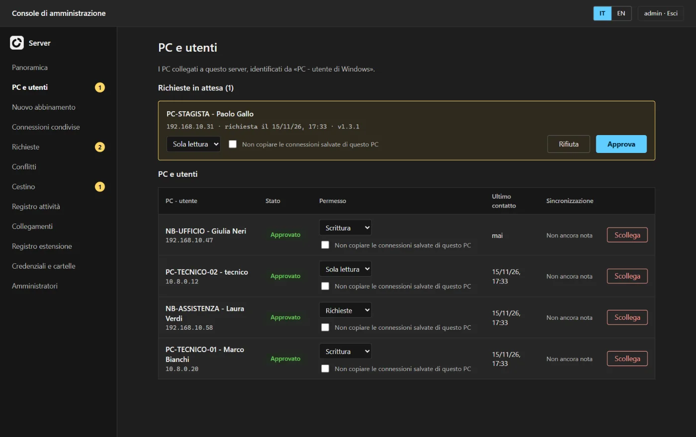
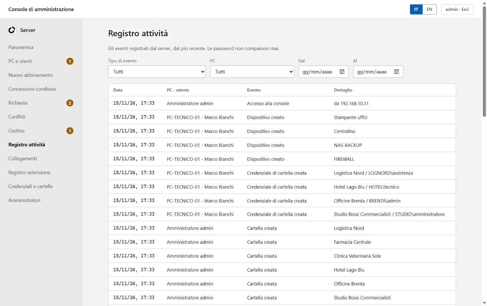
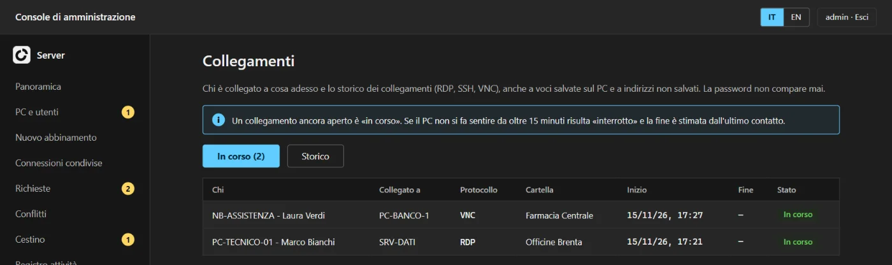
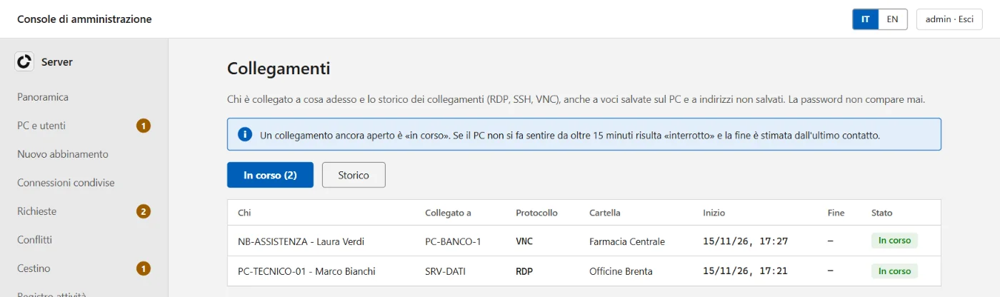
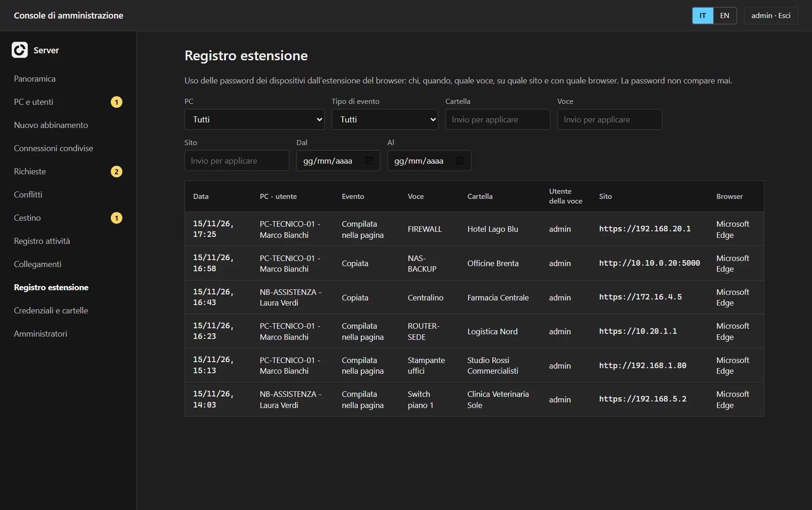

- Lemora
- Per aziende
Lemora Server, sulla rete dell'azienda
Un servizio per Windows o Linux che condivide cartelle, connessioni, credenziali e password dei dispositivi tra i PC del team. Ogni PC va approvato, ogni modifica e ogni collegamento restano nel registro. Nessun server esterno.
- Server
- .NET 10 · SQLite · console web
- Sistemi
- Windows x64 · Linux x64
- Rete
- HTTPS · porta 25353
- Prezzo
- gratuito
Dove passano i dati
Il server tiene l'archivio condiviso. Le sessioni RDP, VNC e SSH partono dai PC dei tecnici verso i PC dei clienti: non passano dal server.
Installazione
Avviato una volta, il server si installa come servizio e resta attivo ai riavvii.
-
Servizio. Su Windows gira con l'account LocalService e una regola del firewall limitata alle reti private. Su Linux diventa un servizio systemd con utente dinamico; ufw o firewalld vengono configurati di conseguenza. Nel terminale compare un codice di avvio monouso.
$ sudo ./Lemora.Server # installa il servizio e stampa il codice di avvio
-
Console web. Dal browser, all'indirizzo del server: codice di avvio, primo amministratore, impostazioni. Tutto il resto si gestisce da qui.
https://192.168.10.20:25353 -
PC del team. Lemora in modalità Teams chiede un codice di abbinamento di 6 caratteri, valido 30 minuti e usabile una volta. L'amministratore approva il PC dalla console e sceglie il permesso.
Prova · Console › Nuovo abbinamento
······
Scade tra 30:00 · vale per un solo PC
Prova · PC-STAGISTA › Collega a Teams
Serverhttps://lemora.studio.lan:25353


La disinstallazione toglie servizio, regola del firewall, dati e database: Lemora.Server --uninstall --purge.
PC e permessi
L'identità è la coppia PC e utente di Windows. Il permesso vale per tutto l'archivio condiviso di quel PC e si cambia o si revoca dalla console in qualsiasi momento.
| Permesso | Connessioni | Credenziali e dispositivi |
|---|---|---|
| Sola lettura | Le apre, non le modifica | Le usa e le copia, non le modifica |
| Richieste | Ogni modifica diventa una richiesta da approvare | Come per le connessioni |
| Scrittura | Crea, modifica, cancella | Crea, modifica, cancella |
- Revoca
- Al primo contatto dopo la revoca il PC cancella la sua copia delle voci condivise; se resta offline, la copia si blocca come descritto in A.4.
- Amministratori
- Più amministratori della console, con gli stessi poteri. Il principale e l'ultimo rimasto non si cancellano. Dopo 5 accessi sbagliati la console si blocca per 5 minuti; la sessione dura 8 ore.
- admin ha cambiato il permessoPC-GIULIA · giulia
- admin ha approvato il PCPC-GIULIA · giulia


Condivisione e lavoro offline
Ogni PC tiene una copia cifrata dell'archivio condiviso e lavora anche con il server spento o fuori sede.
- Cosa si condivide
- Connessioni RDP, SSH e VNC; l'albero delle cartelle, anche vuote, con dominio e prefisso; credenziali di cartella; password dei dispositivi.
- Sincronizzazione
- Ogni 20 minuti, oppure subito con "Sincronizza ora".
- Senza server
- Dopo 7 giorni senza contatto le voci condivise si bloccano sul PC. Si sbloccano alla prima sincronizzazione.
- Sincronizzazione spenta
- Un PC può spegnerla; la console lo mostra e lo registra.
- Connessioni personali
- Restano solo sul PC finché il tecnico non le propone al server.
Richieste, proposte e conflitti
- Richieste
- Le modifiche dei PC con permesso Richieste aspettano nella pagina omonima della console: approvate o rifiutate, con chi e quando.
- Proposte
- Una connessione personale proposta al server diventa condivisa dopo l'approvazione. La console segnala i doppioni.
- Conflitti
- Se due PC modificano la stessa voce vale quella del server; l'altra resta da confrontare: "Tieni versione server" o "Usa versione del PC".
- Cestino
- Le voci cancellate restano con autore e data e si ripristinano. "Elimina definitivamente" toglie i segreti e lascia la traccia.


Registro delle attività
Circa quaranta tipi di evento, filtrabili per tipo, PC e date. Il registro contiene l'azione, mai il valore di una password.
- Abbinamenti: codice creato, richiesta, approvazione, rifiuto, scollegamento.
- Voci condivise: creazione, modifica, disattivazione, cancellazione, ripristino, eliminazione definitiva.
- Cartelle, credenziali di cartella e dispositivi: creati, modificati, rinominati, cancellati.
- Richieste, proposte e conflitti, con la decisione.
- Password mostrata nella console; utente, password o indirizzo copiati dalla linguetta.
- Amministratori creati o eliminati.


Storico dei collegamenti
Ogni sessione RDP, SSH o VNC aperta da un PC del team, anche verso connessioni personali o indirizzi non salvati.
| PC | Voce | Protocollo | Inizio | Durata |
|---|---|---|---|---|
| PC-GIULIA · giulia | FS-01 · Officine Brenta | RDP | 09:02 | in corso |
| PC-MARCO · marco | Firewall · Officine Brenta | SSH | 08:51 | 6 min |
| PC-MARCO · marco | 10.30.1.15 · connessione rapida | VNC | 08:20 | 24 min |
| PORTATILE-STAGE · luca | PC-Reception · Studio Rossi | VNC | 08:05 | interrotto |
Filtri per PC, testo e date, pagine da 100 righe. Lo storico registra nome, indirizzo e cartella; mai credenziali.


Registro dell'estensione
Con Teams, ogni uso dell'estensione del browser arriva al server: compilazione, copia, salvataggio, modifica, cancellazione.




- 1PC in attesa di approvazione
- 2Permesso del PC
- 3Registro dell'estensione
Per ogni evento: PC e utente, ora, voce, cartella, utente della voce, browser e sito ridotto a https://host:porta, senza percorso.
Requisiti, rete e backup
- Sistema
- Windows x64 o Linux x64; funziona anche su Raspberry Pi (Linux ARM64).
- File
- Lemora.Server, file unico di circa 100 MB con .NET incluso: nessun prerequisito da installare.
- Database
- SQLite (server.db)
- Rete
- HTTPS sulla porta 25353, modificabile con
--port. Accetta solo indirizzi di reti private. - Certificato
- Autofirmato, creato al primo avvio, valido 10 anni.
- Backup
- Basta copiare la cartella dati, compreso
server.key: la chiave che apre le password salvate.
Cosa è cifrato nel database del server e cosa no: Sicurezza, S.5
Lemora e la direttiva NIS2
L'articolo 21 della direttiva NIS2 elenca le misure di sicurezza che i soggetti essenziali e importanti devono adottare. Per gli accessi remoti ai sistemi dei clienti e dell'azienda, Lemora copre una parte concreta di alcune di queste misure.
| Misura | Cosa fa Lemora | Dove |
|---|---|---|
| Controllo degli accessi, lettera i | Solo i PC approvati con un codice di abbinamento vedono le voci condivise. Ogni PC ha un permesso (sola lettura, richieste, scrittura) che si cambia o si revoca dalla console; alla revoca il PC cancella la sua copia. | A.3 |
| Gestione degli asset, lettera i | Connessioni, credenziali e password dei dispositivi ordinate per cliente e sede, in un unico archivio invece che in file e fogli sparsi. | A.4 |
| Tracciabilità e gestione degli incidenti, lettera b | Il registro delle attività dice chi ha cambiato cosa e quando; lo storico dice chi si è collegato a quale server e per quanto. Sono i dati che servono per ricostruire un incidente. | A.6, A.7 |
| Crittografia, lettera h | Archivio cifrato con AES-256-GCM sul PC e sul server, collegamento al server con TLS e controllo dell'impronta del certificato, aggiornamenti firmati con ECDSA. | Sicurezza |
| Autenticazione, lettera j | Sblocco con password principale o Windows Hello; verifica prima di mostrare o copiare una password. Console con blocco dopo 5 accessi sbagliati e sessione di 8 ore. | Sicurezza, S.3, A.3 |
| Igiene informatica, lettera g | Password copiate negli appunti senza cronologia di Windows e cancellate dopo 30 secondi; l'estensione compila solo al clic e solo sulle pagine con l'indirizzo del dispositivo. | A.8 |
| Catena di fornitura, lettera d | Il server gira su hardware dell'azienda, Windows o Linux: nessun dato su servizi cloud di terzi. | A.2 |
Lemora non è un prodotto certificato e il suo uso, da solo, non rende un'organizzazione conforme alla NIS2. Analisi dei rischi, notifica degli incidenti, continuità operativa, formazione del personale e le altre misure della direttiva restano a carico dell'organizzazione, con gli strumenti e le procedure che sceglie.